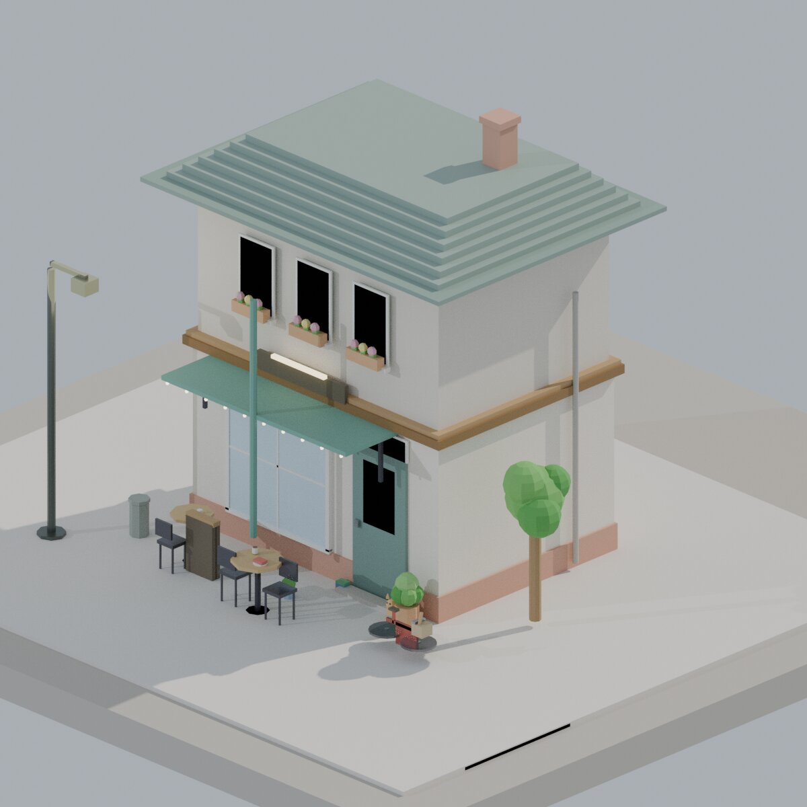
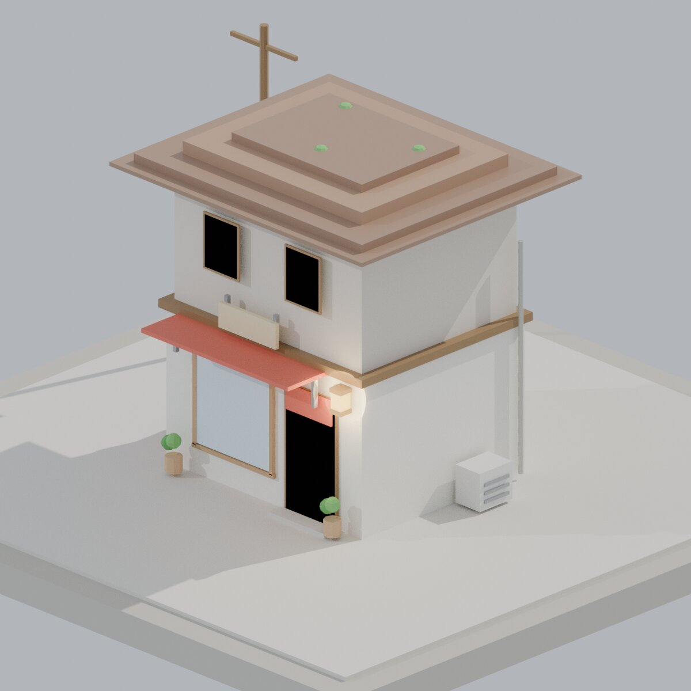
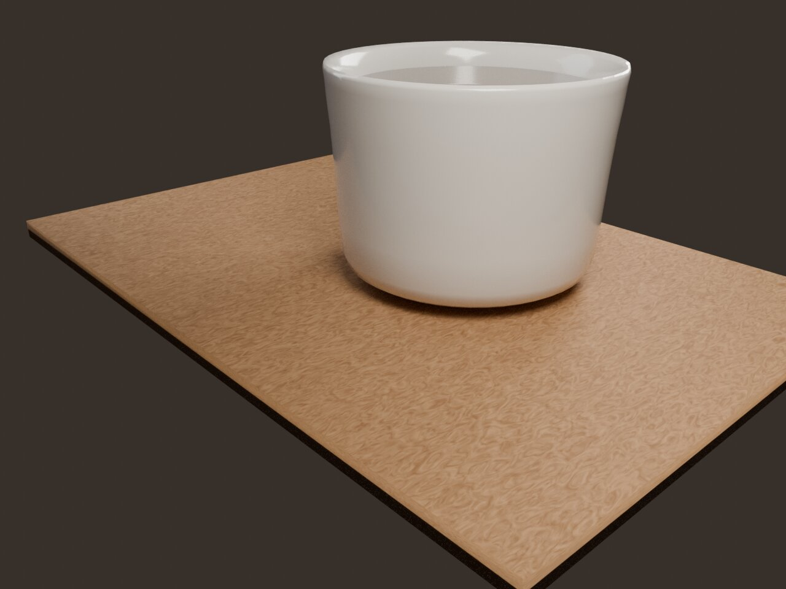

Isometric Café
Um café de esquina visto de cima, como maquete de arquiteto. Telhado, janelas, vegetação — tudo construído com primitivas geométricas empilhadas. A vibe cozy que dioramas isométricos carregam: você quer morar ali dentro.
Essa é a peça base pro estilo visual da coleção. Daqui saem os próximos: padaria, floricultura, livraria, cada um com personalidade própria.
diorama isometric proceduralIsometric Building
Arquitetura urbana miniaturizada. Prédio residencial com andares, sacadas, escadas. A perspectiva isométrica elimina ponto de fuga — tudo fica legível, limpo, quase diagramático. Design sobre realismo.
diorama isometric architecture

Coffee Mug
A primeira escultura. Um objeto cotidiano, simples, mas que exigiu entender materiais, iluminação, reflexos. Cerâmica, subsurface scattering, environment lighting. O "hello world" da modelagem 3D — do jeito mais honesto possível.
object product render first piece